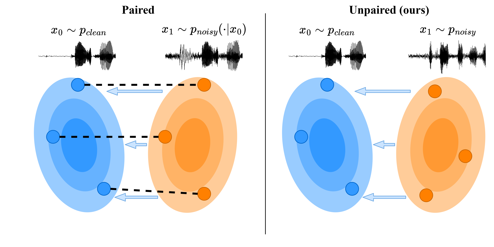

Speech enhancement (SE) models typically rely on supervised learning with paired data examples where clean speech is synthetically degraded. This paradigm limits performance in real-world scenarios where the target environment's specific acoustic characteristics are unknown. We propose a fully unpaired SE framework that uses principled Diffusion Schrödinger Bridges (DSB) to learn a stochastic transport process between a clean and a degraded speech distribution. Algorithms for learning transport maps are computationally heavy since they require simulating differential equations during training, usually at each training step. Therefore, we propose using a high-efficiency Mamba Diffusion Model designed for end-to-end waveform processing. We compare against state-of-the-art methods for speech enhancement, both paired and unpaired, as well as a classical signal processing algorithm. Experimental results show that we are on par or better than the baselines while being orders of magnitude faster during inference. Furthermore, we show that the flexibility of the DSB formulation allows our model to generalize across SE tasks, offering a robust and efficient solution for real-world speech restoration.

| Original | Distorted | SE-MSB* | BUDDy | GFB | WPE | SGMSE | Paired SE-MSB* |
|---|---|---|---|---|---|---|---|